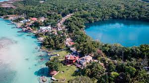

Real de Catorce, San Luis Potosí
Un antiguo pueblo minero situado en la sierra de Catorce, conocido por su arquitectura colonial y su atmósfera mística.
Valle de Bravo, Estado de México
Situado en las montañas cerca de la Ciudad de México, Valle de Bravo es conocido por su hermoso lago, sus actividades al aire libre y su arquitectura colonial.
Tulum, Quintana Roo

Conocido por sus ruinas mayas junto al mar Caribe, Tulum es también un encantador pueblo con playas hermosas y una vibrante vida cultural.
Tepoztlán, Morelos
Conocido por su mística y su ubicación al pie del Tepozteco, este pueblo es famoso por sus tradiciones ancestrales y su ambiente espiritual.
Bacalar, Quintana Roo
Conocido como "Pueblo Mágico de los Siete Colores", este destino es famoso por su laguna de aguas cristalinas y sus paisajes surrealistas.
Pátzcuaro, Michoacán
Este pueblo colonial a orillas del lago Pátzcuaro es famoso por sus festivales tradicionales, sus artesanías y su rica historia.
Bernal, Querétaro
Conocido por su imponente monolito, la Peña de Bernal, este pueblo ofrece un ambiente tranquilo y vistas panorámicas impresionantes.
Mazamitla, Jalisco
Situado en la Sierra Madre Occidental, este pueblo alpino es famoso por su arquitectura de madera, su clima fresco y sus paisajes naturales.
Cuetzalan del Progreso, Puebla
Con sus cascadas, cuevas y cafetales, este pueblo ofrece una rica herencia cultural y una conexión con la naturaleza.
Tlayacapan, Morelos
Conocido por sus tradiciones prehispánicas y su arquitectura colonial, este pueblo es un refugio para los amantes de la historia y la cultura.
Tequila, Jalisco
Además de ser la cuna de la bebida nacional de México, este pueblo ofrece una arquitectura encantadora y una rica historia relacionada con la producción de tequila.
Huasca de Ocampo, Hidalgo
Conocido por sus haciendas históricas, sus bosques de rocas y sus cascadas, este pueblo es un destino ideal para los amantes de la naturaleza y la historia.